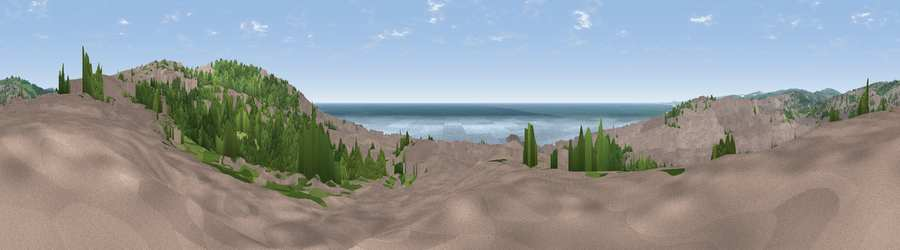

Viewpoint near Brighton
#8969 in England · top 34% of its area beats it · near Brighton · access?Where it is
The exact computed spot (TQ 31875 04500). Click the marker for map links.
Public access: no public right of way or access land is recorded at this exact spot — it may be on private land. Computed from Natural England's CRoW access layer and OpenStreetMap rights of way — not the legal definitive map. Always verify locally.
The view, rendered

A 360° render of this exact spot computed from the terrain model, tree cover and land cover — summer colours, afternoon light, calibrated against photographs of famous viewpoints. Real trees, hedges and buildings will differ in detail.
The panorama
Grey silhouette: terrain skyline in each direction (720 bearings, Earth curvature and refraction included). Dashed green: skyline with trees (+15 m) and buildings (+8 m) as obstacles. Blue strip: how far the ground is visible on each bearing.
Where the view opens
Wedge length = distance to the farthest visible ground on that bearing (vegetation-aware). Rings at 10, 25 and 50 km.
What fills the view
48% built-up · 24% water · 21% woodland · 7% grassland
Angular shares of the visible panorama (visual magnitude), not map area. Landscape diversity 0.54 (0–1 Shannon).
Key numbers
More beautiful places nearby
The staircase of upgrades: each row has a higher view potential than everything closer. Driving times are estimates from straight-line distance, calibrated against real road routing — check an actual route before setting out.
| Place | Direction | Drive | Score |
|---|---|---|---|
| Viewpoint near Roedean | ENE · 3 km | ~6 min | 67.9 |
| Viewpoint near Roedean | ESE · 3 km | ~7 min | 74.1 |
| Swanborough Hill | ENE · 7 km | ~15 min | 80.5 |
| Viewpoint near Iford | ENE · 8 km | ~16 min | 80.7 |
| Ditchling Beacon | N · 9 km | ~17 min | 81.8 |
| Fulking Hill | NW · 9 km | ~18 min | 82.2 |
| Viewpoint near Firle | E · 14 km | ~26 min | 83.8 |
| Viewpoint near Firle | E · 16 km | ~28 min | 85.4 |
50.82503, -0.12901 · source: screening · position refined by local search. Computed location — check access rights before visiting.